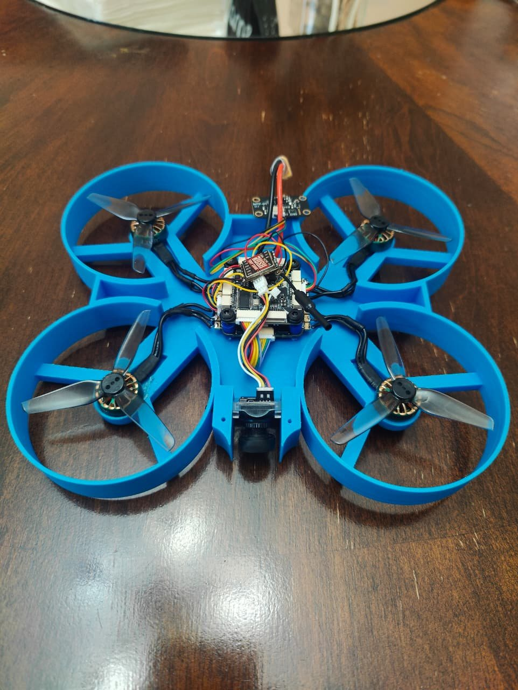
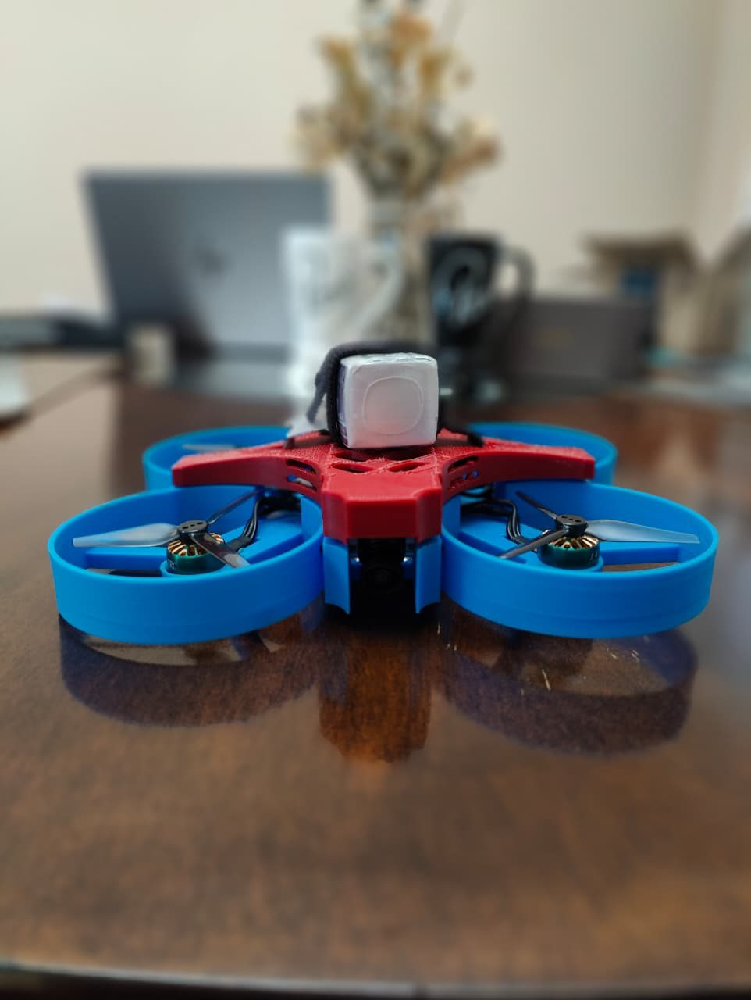
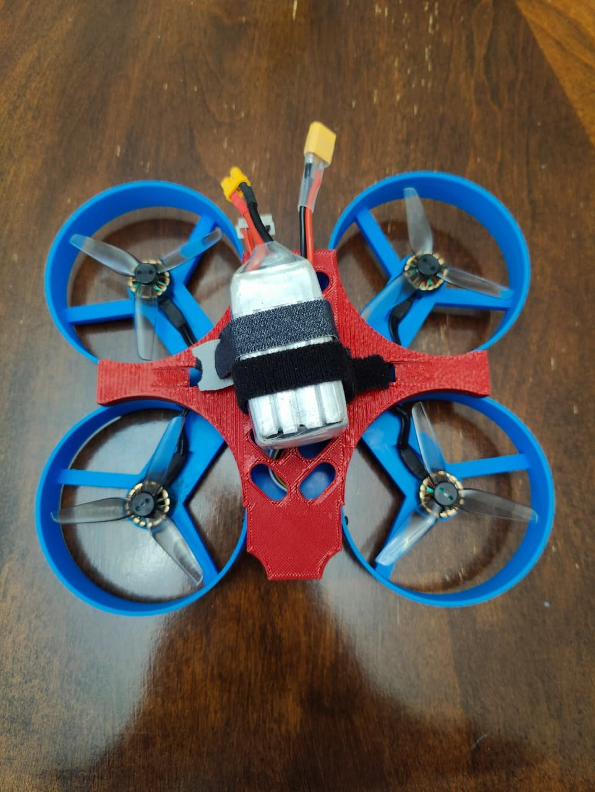
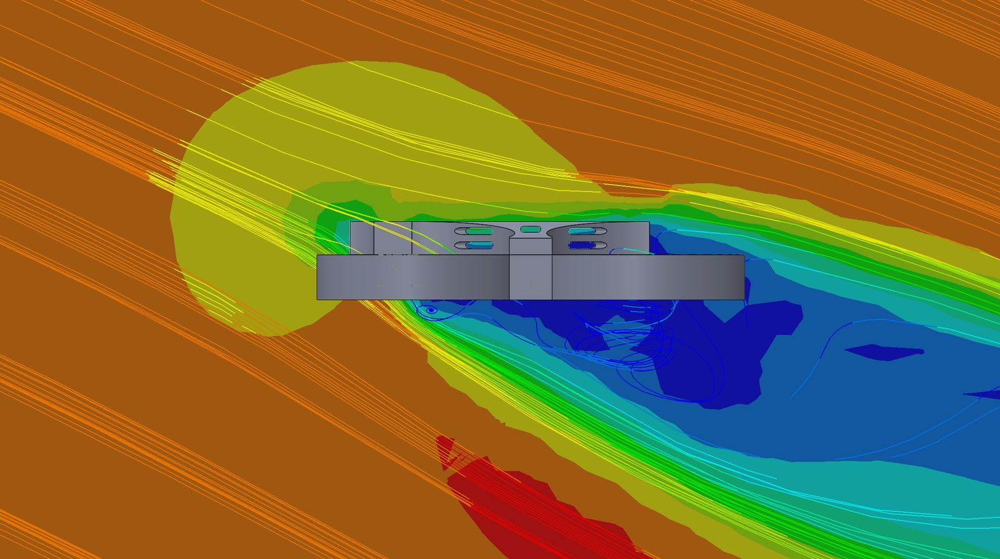
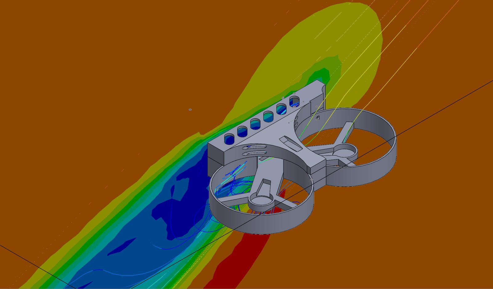
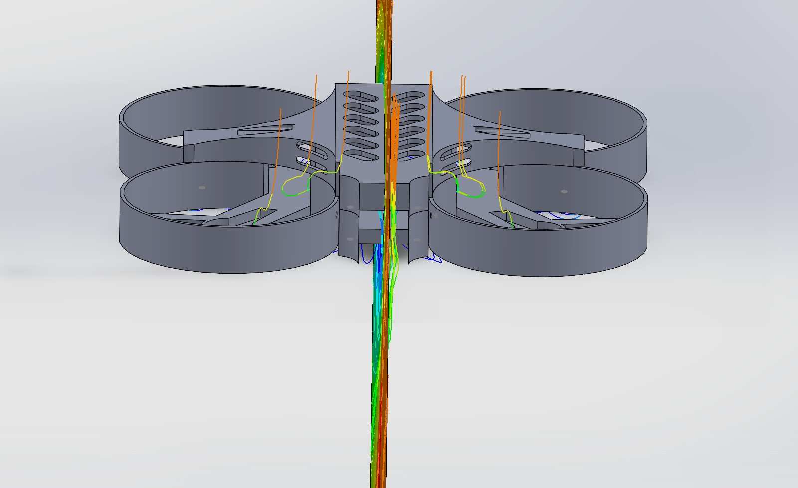
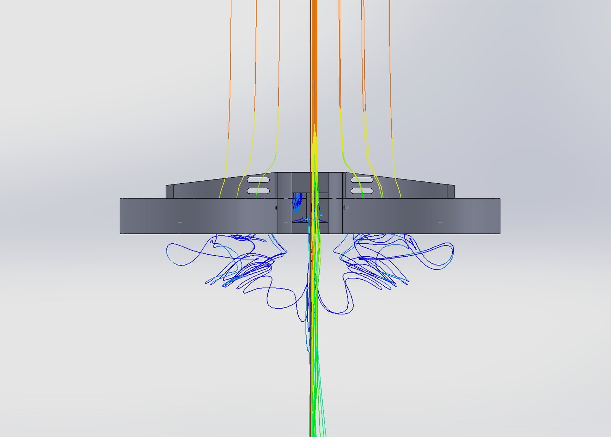

Results
Every number from the project in one place. The airflow numbers come from SOLIDWORKS Flow Simulation with the air at 15 m/s.
Forces are from the level-flight case. The solver converged: both forces changed by less than 0.0002 N at the end of the run.
The mission
This is not just a drone that flies. It has to find one specific person. We adapted object-detection software (YOLO and MobileNet-SSD) to do facial recognition, matching faces from the onboard camera against a database.
What the design had to do
- Fly steady and slow so the camera gets clear images
- Keep the props guarded, since it flies near people
- Keep the electronics from overheating
- Balance the weight of the internal parts for stable flight
- Fit the whole build inside a $600 budget
My part
- Design lead: modeled the entire frame in SolidWorks
- Designed the ventilation slots and the weight layout
- Produced the frame parts with 3D printing
- Helped the team with the build and integration
- Ran the airflow study on the final CAD model
The build
A blue ducted frame with a red top cover. The flight controller and ESC stack sit in the center, the FPV camera faces forward between the front ducts, and the battery straps on top.



Airflow study
I ran an external flow study in SOLIDWORKS Flow Simulation. The drone sits still inside a virtual wind tunnel and the air moves past it, like the drone is flying forward. A real FPV drone tilts its nose down to move, so I ran a second case with the air coming in at 25°.
| Study type | External flow, air |
|---|---|
| Case 1 | 15 m/s, straight at the front |
| Case 2 | 15 m/s with a 25° nose-down tilt (13.6 m/s forward, 6.3 m/s from above) |
| Ambient | 101,325 Pa, 293 K |
| Goals tracked | Total force on the drone, forward and vertical |
| Propellers | Not spinning (frame only) |
About the weight of 139 g. The frame also gets pushed down by 0.98 N, because the air hits the sloped top cover.
What the air does
These views are from Case 2, the tilted flight. The air comes in from the upper left.

At the front and top
Air slows down as it hits the front and the sloped cover. That pressure makes most of the drag and the downward force.
Under the front edge
Air speeds up as it wraps around the lower front corner, the fastest spot in the study.
Behind and below
The square walls of the ducts and body leave a big wake where the air stalls and swirls.



What it means for the mission
Drag barely matters at search speed
The frame acts like a box in the air, not like a wing. That is normal for a ducted drone, and it is a fair trade here. Drag grows with the square of speed, so at a slow search speed of 5 m/s:
That is about 15 g, almost nothing for the motors. The ducts cost some drag at high speed, but they protect the props around people and help thrust in hover, which is how the drone spends most of its time looking for someone.
What I am doing next
- Thermal study: add the electronics with their heat output and check how hot they get in hover, the worst case for cooling.
- Spinning propellers: add rotating regions to see how the prop wash changes the wake and the thrust.
- Finer mesh: rerun at a higher mesh level to confirm the drag value holds.